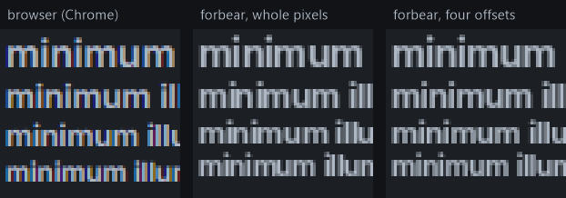
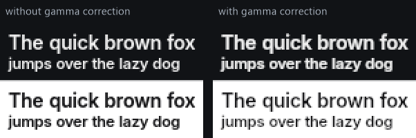
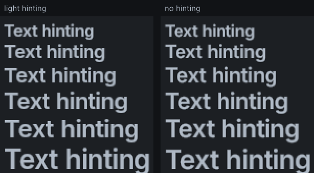
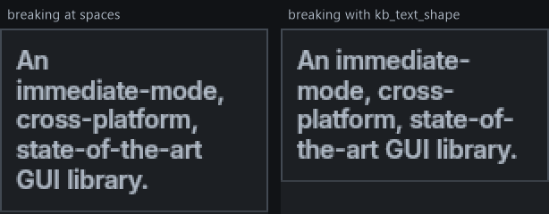

forbear log, entry 005: the first program, a text input, and a C header generated from Jai
TL;DR:
- The first program built with forbear: a calculator
- A text input with selection, clipboard, undo and redo
- Hooks for scrolling and transitions
- A C API, with a header generated from the Jai code
- Other things: cursors, clipboard on Wayland, sharper text, window size limits
Download the Calculator for Windows to try it yourself, or read its source code.
Calculator
I'm happy to say I finally finished the first useful program built with forbear: the calculator I mentioned in entry 003. You can find it in its own repository.
Some numbers:
- 3.6 MB executable, a single file with the font built in
- about 300 ms to show the first frame (there's plenty of room for improvement here)
- 10.5 MB of memory
- 1,155 lines of Jai
For comparison, on my machine the Windows Calculator is 18.2 MB on disk, takes about 410 ms until its buttons show up, and sits at about 97 MB of working set memory.
Text input
Unlike the Windows Calculator, this one lets you type expressions freely in a text field, and the result shows up as you type.
If you have been following the progress of the library, you know that forbear currently only gives you get_text_input, the text typed this frame.
So the calculator had to implement all of the input logic itself, which was the hardest part of building it.
It has a caret, selection with the mouse and with shift, jumping by word, copy, cut, paste, and a very archaic undo and redo. It also scrolls to keep the caret visible.
Input :: (input_state: *Input_State, body: Code) -> Input_Context #expand {
scrolling_state := state(Scrolling_State);
// ...
element(Style.{
text_wrapping = .NONE,
children_offset = -scrolling_state.effective_offset,
// ...
}, #code {
context.input.text_node_index = text(Style.{ z_index = 2, },
to_string(input_state.value.data, input_state.value.count));
Selection(Style.{});
Caret(Style.{});
use_scrolling(scrolling_state);
use_input();
#insert body;
});
return context.input;
} @componentThe value and the undo history are resizable arrays kept in state, so they use the pools I wrote about in the last entry, through node_pool().
The caret and the selection are plain elements with relative placement. Text nodes have a .glyphs field, so the position of the caret is the
position of the glyph under the cursor:
glyphs := get_node(text_node_index).glyphs;
// ...
caret_position = glyphs.array[cursor].position * font_units_to_pixel;These are the glyph positions from before layout, at the point where the UI is defined. Since wrapping happens during layout, this approach doesn't work with multiline text.
kb_text_shape already knows where words start, because it needs that for line breaking. forbear now exposes it on each glyph as starts_word,
so jumping by word (with control, or option on macOS) is just walking the glyphs until the next one that starts a word.
For undo and redo, each edit is recorded as one Input_Edit:
Input_Edit :: struct {
// This is always the start of where the change is done
where: s64;
cursor_before: s64;
// There's never a selection after an edit
selection_anchor_before: s64 = -1;
deleted_length: s64;
inserted_length: s64;
deleted_index: s64 = -1;
inserted_index: s64 = -1;
}The bytes an edit deletes are copied into a history_storage array, and the edit keeps their index.
Undoing pops the last edit, reverts it and moves it into a second list. Redoing does the reverse. The bytes an edit inserted are only
saved the first time it's undone, since that's the first time they would be lost.
This was heavily inspired by stb_textedit.h.
This still lives in the Calculator and not in forbear, beacuse of the following limitatiosn:
- it only handles a single line
- it assumes one byte per glyph, which holds here because the input ignores everything but digits, operators, parentheses, periods and spaces
- it doesn't support input methods, as I mentioned in the last entry
Once those are sorted out, use_input, Caret and Selection are going to become a built-in
Scrolling and transitions
To support scrolling on the input, forbear now has use_scrolling:
scrolling_state := state(Scrolling_State);
element(Style.{
children_offset = -scrolling_state.effective_offset,
}, #code {
use_scrolling(scrolling_state);
// ...
});You keep a Scrolling_State in state, call the hook inside the element that scrolls, and move its children through the new children_offset style.
The hook adds the scroll delta while the mouse is inside the element, and clamps the offset so that it can't go past the content. To know where the content ends, the measurement
of an element now also has a content_size.
There are two offsets in the state. offset is where the scrolling should end up, and effective_offset follows it with a spring, which is what makes it smooth.
The input needs to scroll as the user types, and use_scrolling clamps the offsets to the sizes in the node's measurement,
so the best solution I found was to schedule the scroll for the next frame.
One thing is missing: when scrolling elements are nested, every one with the mouse inside scrolls. Only one of them should, and it should hand the scrolling over to the next one once it reaches its end.
Scrolling is built on the second new thing, hooks for transitions:
effective_offset = use_spring_transition(offset, .{
stiffness = 320.0,
damping = 32.0,
mass = 1.0,
current = *effective_offset,
});use_spring_transition keeps a value and a velocity in state, and on every frame moves the value towards the target like a spring would.
use_transition simply goes from the old value to the new one over a duration, with an easing function:
ease_out :: (t: float) -> float { return 1 - (1 - t) * (1 - t); }
width := use_transition(ifx is_mouse_inside() then 240.0 else 96.0, 0.2, ease_out);Both work with float, Vector2, Vector3 and Vector4 (from Jai's Math module), and both are plain functions over
state, about 50 lines in total, so you can write your own if they don't fit your needs.
They're marked with @hook, which works the same way as @component from the last entry: the compiler plugin wraps each call in a
scope, so that two calls don't end up sharing their state.
C API
forbear now provides a C API and a dynamic library, and you can try both from the quick start.
Here's the Counter from the last entry, in C:
void counter(void) {
fb_s64 *count = FB_STATE(fb_s64);
FB_ELEMENT(
.background = fb_color(fb_rgb(44, 49, 56)),
.border_radius = 6,
.padding = fb_all_sides(8),
) {
char count_text[64];
snprintf(count_text, sizeof(count_text), "count: %lld", (long long)*count);
FB_TEXT(count_text);
if (fb_on_click(FB_MOUSE_BUTTON_LEFT, true, false)) {
*count += 1;
}
}
}C has no macros like the ones in Jai, and no closures, so the block that comes after FB_ELEMENT is the body of a for loop that runs once:
#define FB_ELEMENT_KEYED(key, ...) \
for (int fb_element_latch = 0; fb_element_latch < 1;) \
for (fb_Node_Opening_Data fb_element_data = fb_open_element(FB_STYLE(__VA_ARGS__), (key)); \
fb_element_latch < 1; \
fb_element_latch = 1, fb_close_element(fb_element_data))
#define FB_ELEMENT(...) FB_ELEMENT_KEYED(FB_LOCATION_KEY, __VA_ARGS__)Keying works like it does in the JavaScript adapter. The key is a string with the source location, which Jai then hashes:
#define FB_LOCATION_KEY __FILE__ ":" FB_STRINGIFY(__LINE__) ":" FB_STRINGIFY(__COUNTER__)For elements in a loop, there's FB_ELEMENT_KEYED, which takes your own key.
C doesn't have the compiler plugin that handles @component either, so the scope that the plugin would add is written by hand:
FB_SCOPE Counter();
FB_SCOPE Counter();Without it, the two counters would share the same state, which is the problem @component solved in the last entry.
FB_STATE(fb_s64) is the same state from Jai, on the same static buffers. It takes the size of the type and gives you back a pointer.
An initial value goes after the type, as in FB_STATE(fb_s64, 10).
forbear.h
Writing the whole C header by hand to match the Jai code would take a ton of time and open the way to mistakes and things getting out
of date, so most of forbear.h is generated by the build of the C API, which is a Jai metaprogram.
It compiles forbear once for each operating system, with no output for the ones it isn't running on,
and listens to the compiler's messages. From the type-checked code, it collects the root structs, like Style and Window, everything
they reference, the enums, and every exported procedure whose name starts with fb_. Then it writes each of them as C, with one section of the header per operating system:
typedef struct fb_Line_Height fb_Line_Height;
typedef fb_u8 fb_Line_Height_Kind;
#define FB_LINE_HEIGHT_KIND_PERCENTAGE 0
#define FB_LINE_HEIGHT_KIND_FIXED 1
struct fb_Line_Height {
fb_Line_Height_Kind kind;
union {
float percentage;
float fixed;
};
};
_Static_assert(sizeof(fb_Line_Height) == 8, "fb_Line_Height");
_Static_assert(FB_OFFSETOF(fb_Line_Height, kind) == 0, "fb_Line_Height.kind");Every struct comes with a _Static_assert for its size and for the offset of each of its fields. If a C compiler ever lays out a
struct differently from Jai, the program fails to compile instead of corrupting memory. The internals that C doesn't need to touch, like hash tables,
become opaque bytes of the right size.
The macros that the header provides for a proper API are still written by hand, of course.
The quick start now asks for a language and picks C if it can't find Jai in your PATH, so anyone can try forbear!
On Linux and macOS:
curl -fsSL https://forbear.dev/quick-start.sh | shOn Windows:
irm https://forbear.dev/quick-start.ps1 | iexThe C quick start program needs a compiler with C23 support, like clang 19 or newer. forbear itself doesn't require it; it's only there to make the quick start simpler.
Other things
You can now set the mouse cursor on Windows, Wayland and macOS:
if is_mouse_inside() {
set_cursor(.TEXT);
}Copying to and pasting from the clipboard now also works on Wayland.
You can also get the system theme on Windows (other operating systems are pending):
palette = ifx context.forbear.window.theme == .DARK then DARK_PALETTE else LIGHT_PALETTE;Text got a few improvements again. Each glyph used to be rasterized once and drawn at a whole pixel, which made the space between letters uneven. Now, glyphs are rasterized at four horizontal offsets within a pixel, and each one is drawn with the offset closest to its position:

The coverage of each glyph is now gamma corrected, so light text on a dark background gets a bit heavier, and dark text on a light background gets a bit lighter:

Hinting is now turned off when the scale of the window is 2 or more, and stays light below that. With hinting, the letters grow in steps as the font size grows. Without it, they grow evenly:

Word wrapping now uses the line breaking information from kb_text_shape instead of only breaking at spaces, so a line can also break after a hyphen:

Windows can now have a minimum and a maximum size:
init_window(..., min_width, min_height);Styles have two new properties: line_height, and a corner for relative placement, which is how the calculator's result stays at the bottom right of the input.
The JavaScript adapter now builds on Windows too, but it has fallen well behind on features, and catching up requires much more thought.
Next, I'm going to work on making windowing more complete and robust, especially on macOS, and on turning the calculator's input primitives into forbear built-ins.